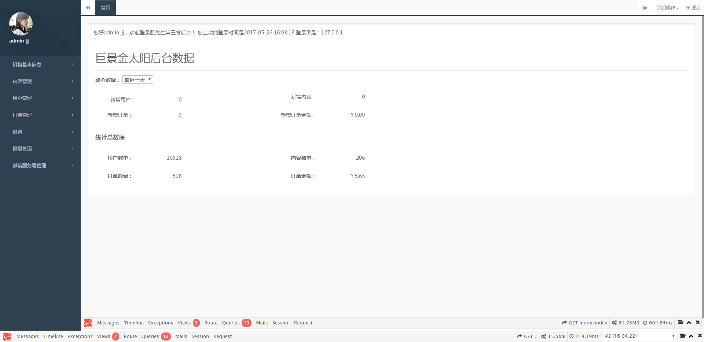
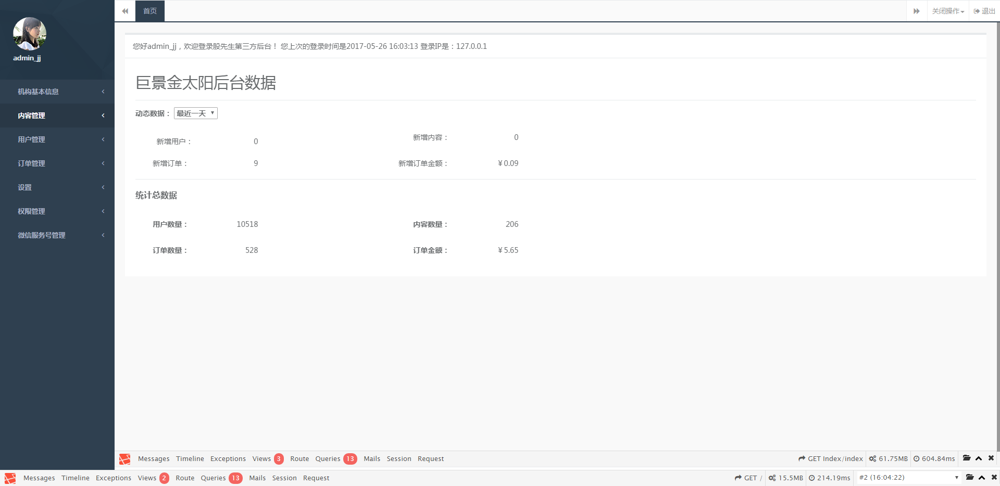

| RunCount=2 |
| result/screenshot/chrome/2017_05_26_16_04_32_topCheck.jpg |
|  |
| result/screenshot/chrome/2017_05_26_16_04_32_topCheck.jpg |
| result/screenshot/chrome/2017_05_26_16_04_47_topCheck.jpg |
|  |
| result/screenshot/chrome/2017_05_26_16_04_47_topCheck.jpg |